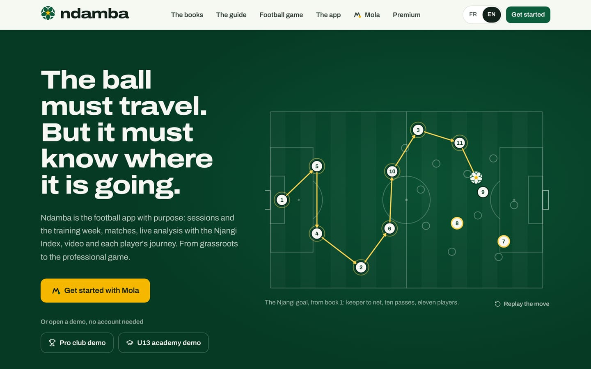
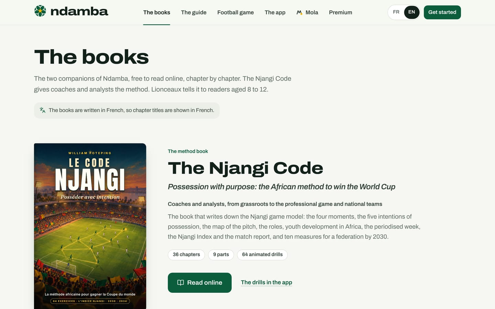
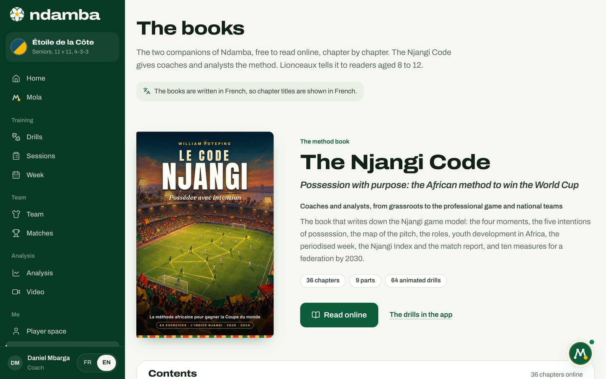
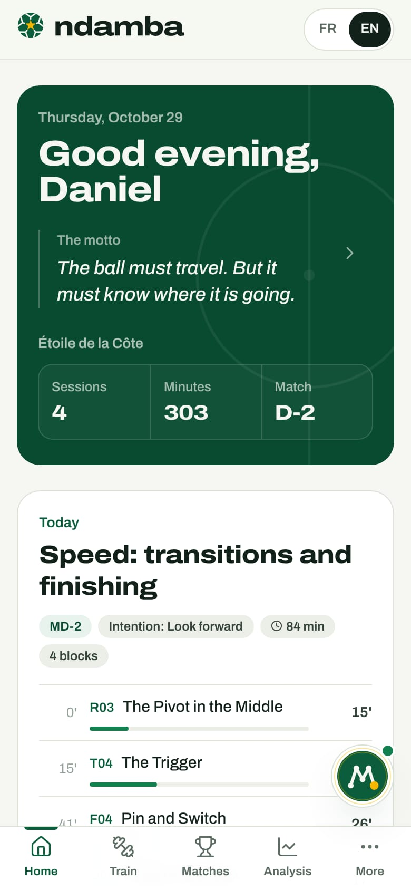

The map of the platform
Ndamba’s two front doors (the public site and the app), every page and what it is for, the four menu groups, the phone tab bar, the Mola button, the language switch and exactly where your data lives.
10 min read
When you first meet Ndamba, you meet several things at once: a website, an app, an agent that talks, two books and a game. That is its strength, and it is also why the whole thing can feel hard to follow at first sight. This chapter is the map. It does not walk through every screen (the following chapters do that): it shows where each thing lives, how you get from one to the other, and where your information is kept.
Two front doors: the site and the app
The first door is the public site. You walk in without creating anything: it presents the method, the books, the game and the plans, for an investor as much as for a curious parent.
The second door is the app, at the address /app: sessions, the week, the team, matches, analysis, the player space. To get in, you need a profile. If you open /app without one, Ndamba takes you to the welcome page, where Mola sets up your space in a few questions (chapter 5), unless you open one of the two demos.
You move from one to the other with the green button at the top right of the site: Get started while you have no profile, Open the app as soon as your space exists.
The public site, page by page
The site’s home page
The home page is one long page. At the top, the navigation bar: The books, Football game, The app, Mola, Premium, then the FR and EN language switch and the Get started button. The app and Mola scroll down to their section of this same page; the other links open their own page. On a phone, these links fold away behind the three-line menu button.


Below the bar, the motto fills the screen: "The ball must travel. But it must know where it is going." On the right, an animated pitch replays the Njangi goal from the novel, from the keeper to the net; Replay the move starts it again. On the left, the gold Get started with Mola button opens the welcome conversation, and under the line "Or open a demo, no account needed", two buttons start a complete demonstration: Pro club demo and U13 academy demo.
Further down, the page presents:
- Ndamba’s three verbs: "Train, observe, follow every player.";
- "What the app does for you", with one tab per audience: Players, Coaches, Analysts, Clubs and federations;
- the Njangi Index: you tap an action (line broken, box entry, loss…) and the gauge moves, as it would during a match;
- the image of the njangi, "Everyone pays in, the pot goes round, everyone benefits.";
- Mola, "Mola does the work. You stay in charge.", with examples of requests;
- the two books, then the game Lionceaux Football and its Play now button;
- a countdown to the 2030 and 2034 World Cups, and finally See the plans.
The footer repeats the motto and the mantra. It also leads to two pages that are not in the top bar: Project review and The Ndamba brand.
The books
The books page (/livres) presents the app’s two companions, free to read online: The Njangi Code (Le Code Njangi), the method book for coaches and analysts, and Lionceaux, the novel for readers aged 8 to 12, with book 1 and the shelf of the six books planned.


Read online opens the book’s reader, a separate reading page: /book/methode/ or /book/tome1/. Two links lead into the app: The drills in the app (chapter 7) and The Ball Lessons in the app (chapter 16). Both books are written in French, and the English page says so.
Premium
The Premium page (/premium) compares the five plans and their prices, and states plainly that payments are not connected yet. Chapter 6 explains the demo activation, chapter 24 the business model.
The Ndamba brand
The Ndamba brand page (/marque) gathers the identity: the logo (the ball and the word "ndamba", always together), Mola’s sign, the colours, the type, the rules of use and the icons. It is the reference for any document, shirt or poster carrying the Ndamba name.

Project review
The Project review page (/revue) presents the four strands of work separately (the novel, the method book, the app, the agent) so that each can be tried one by one. A change request can be prepared there in Mola, and nothing is sent without you.
The welcome page
The welcome page (/bienvenue) is the conversation with Mola that sets up your space. It has its own bar, with the two demos and the language switch. Chapter 5 is devoted to it.
The game Lionceaux Football
The Football game link opens /football/, the page of the video game Lionceaux Football: an eleven-a-side match on a red-earth neighbourhood pitch, with the Play and How to play buttons. It plays in the browser, by touch on a phone, with a controller or on the keyboard (chapter 21).

The Back to Ndamba link at the top of that page takes you to the site’s home page. To get back into the app, tap Open the app from there.
The app and its menus
On a computer, the app has a dark green column on the left. At the top sits the logo, then the plate of the active team: its two colours, its name and a line such as "Seniors, 11 v 11, 4-3-3". Next come Home and Mola, then the menus, filed under four headings: Training, Team, Analysis and Me.


| Group | Menu | What you do there | Chapter |
|---|---|---|---|
| (top) | Home | Today’s screen: session, next match, week, latest Index | 6 |
| (top) | Mola | Talk to the agent, follow its tasks, approve what it prepares | 18 |
| Training | Drills | The method’s 64 drills, each animated like a short video | 7 |
| Training | Sessions | Your sessions and the session builder | 8 |
| Training | Week | The week around the match, MD-4 to MD-1, and its load | 9 |
| Team | Team | The squad, each player’s file and journey | 10 |
| Team | Matches | Fixtures, line-up, match sheet | 11 |
| Analysis | Analysis | The season, live analysis, the reports | 12 to 14 |
| Analysis | Video | Video projects and the studio | 14 |
| Me | Player space | The player’s programme, challenges, lessons and notebook | 15, 16 |
| Me | Books | Both books, without leaving the app | 19, 20 |
| Me | Football game | The game page (it opens outside the app) | 21 |
| Me | Premium | The plans and the demo activation | 6, 24 |
| Me | Settings | Profile, teams, plan, backups | 6 |
Other pages open from these: a drill’s page, the session builder, a player’s file and journey, the Observe page (from the squad, a journey, a session or a match), the match sheet, the report, the video studio, the lessons and the notebook. Live analysis takes the whole screen, with no menu, so that nothing gets in the way on the touchline.
At the bottom of the column, a block shows your initials, your name and your role (for instance "Coach"); it opens Settings, where your plan is shown too. Next to it sits the language switch.
On a phone: the tab bar
On a phone, the column disappears. A slim bar at the top shows the logo and the language switch. At the bottom, a bar of five tabs stays within reach of your thumb: Home, Train, Matches, Analysis and More.


Train opens the list of sessions. More slides up a panel that names the active team, then lists every menu group in two columns, just as on a computer. On a page that is not one of the first four tabs (Settings, for instance), More is the tab that lights up. The panel closes with the cross, by tapping the dark background or by choosing a page.
The Mola button, everywhere
On the app’s pages, a round button with Mola’s face floats at the bottom right (above the tab bar on a phone). It opens a compact conversation without leaving the page; a small badge flags an unread message or actions waiting for your approval. It disappears on the Mola page, where the conversation is already open, and during live analysis. Chapter 6 describes this button, chapter 18 everything Mola can do.
The language switch
Ndamba is bilingual, French first, English second. The FR or EN switch appears everywhere: in the site bar, at the bottom of the app’s column, in the top bar on a phone, on the welcome page and on the game page.
The change is immediate. Your choice is remembered by the browser and, if you have a profile, saved in it; you can also change it in Settings. With no saved choice, Ndamba opens in French; only the game page then follows the browser’s language.
Two details avoid surprises. What you write yourself (a session title, a note) stays in the language you wrote it in, and so does the content of a demo, created in the language that was active when you started it. And both books are written in French.
Where your data lives
The answer is simple: everything is stored in the browser of the device you are using. Your profile, teams, players, sessions, matches, tagged actions, notes and conversations with Mola stay on that device. The About panel in Settings says it in so many words: "Storage: On this device".
There are no user accounts and no sync yet. In practice:
- Another browser, another computer or another phone opens an empty space.
- To keep your work or move it to another device, you export a backup (a file) from Settings, then restore it elsewhere. Chapter 6 shows how, step by step.
- If you clear this site’s browsing data, your space goes with it. Export a backup first.
- The Erase everything button in Settings deletes the profile, the teams and everything else from this browser, including the lessons marked "I’ve got it" and "My view" in the player space. The language choice is kept.
Only one thing can leave the device: the sentence you write to Mola, with a few pointers (the team name, its age group, your role, the next and the last opponent), is offered to Ndamba’s server. The server passes it on to an artificial intelligence model, so it is understood better, only if it is set up for that. Otherwise it declines, and the built-in rules engine answers on its own. The welcome conversation is always understood on the device. And the messages Mola prepares for the outside world (WhatsApp, text, e-mail) wait for your approval: you are the one who sends them.
Accounts and sync between devices are planned; the roadmap in chapter 26 lists them among the next steps.
Every page of the site at a glance
| Address | Page | What it is for |
|---|---|---|
| / | Site home | Present Ndamba, start a demo, get started with Mola |
| /livres | The books | Present The Njangi Code and Lionceaux, open their readers |
| /book/methode/ | The Njangi Code reader | Read the method book, chapter by chapter |
| /book/tome1/ | Lionceaux, book 1 reader | Read the illustrated novel, chapter by chapter |
| /premium | Premium | Compare the plans, activate a plan as a demo |
| /marque | The Ndamba brand | The logo, Mola’s sign, the colours and the rules |
| /revue | Project review | Review the four strands of work and ask for a change |
| /bienvenue | Welcome | Set up your space with Mola, or open a demo |
| /football/ | Lionceaux Football | Play the game in the browser |
An unknown address leads back to the site’s home page. Appendix C lists every address of the app, page by page.